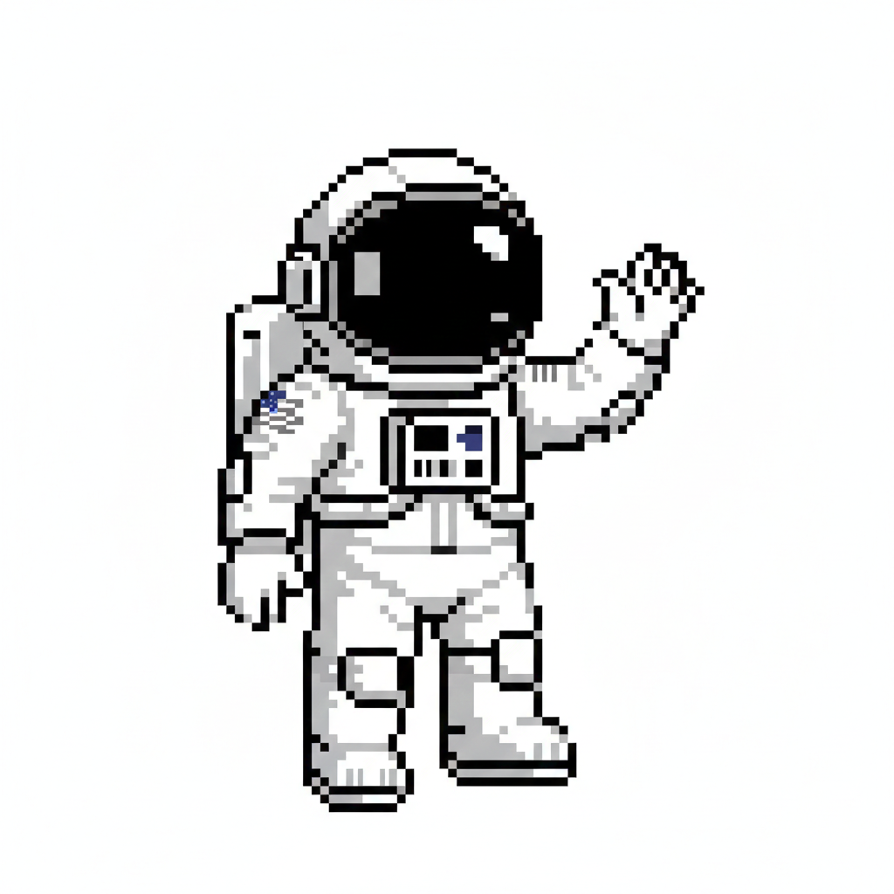
Your friendly neighborhood astroparticle physicist.
Capturing photons for the sake of science, taking photos of my friends, and beating the guitar in my free time.
Dedicated to making the universe a bit less mysterious through outreach.
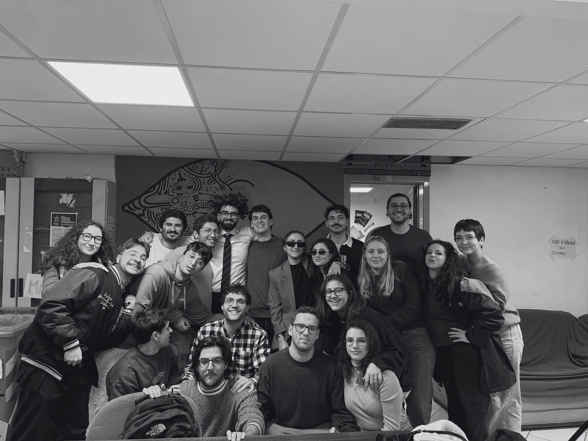
The moment I officially started my journey into the adult world of subatomic particles.
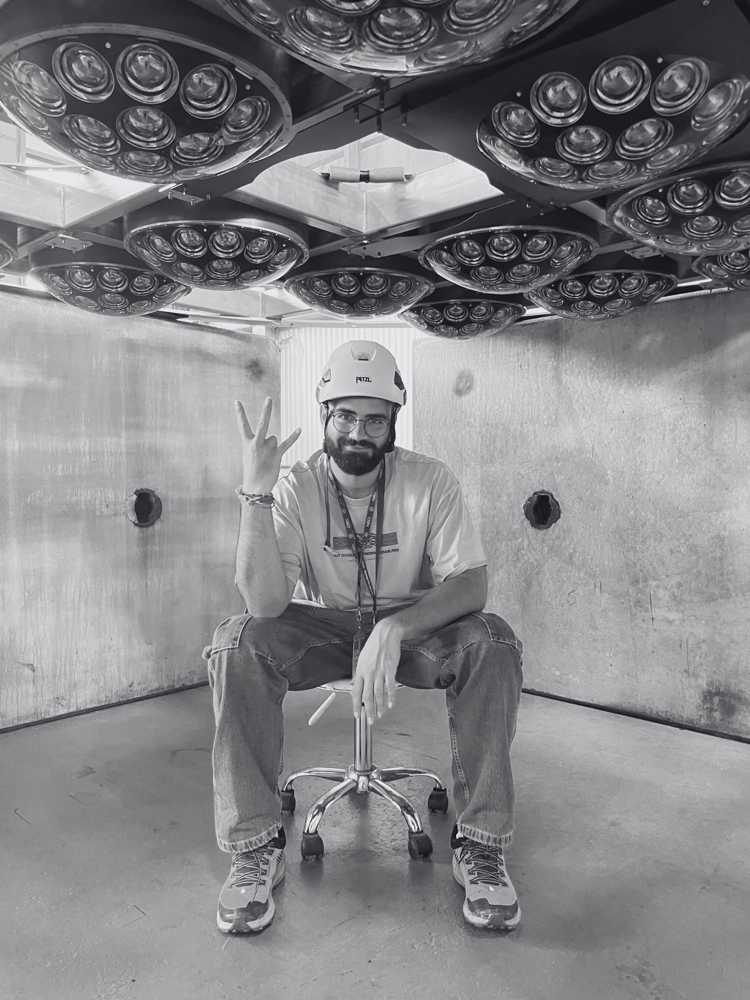
Working at the heart of modern physics, where meeting different people and networking are fundamental things.
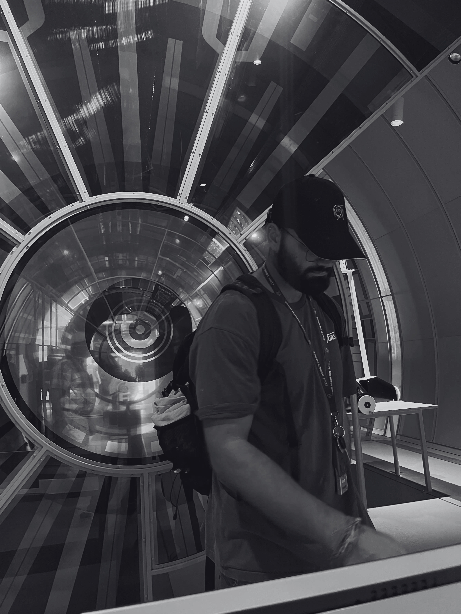
I loved the CERN Museum; every scientist must visit it!
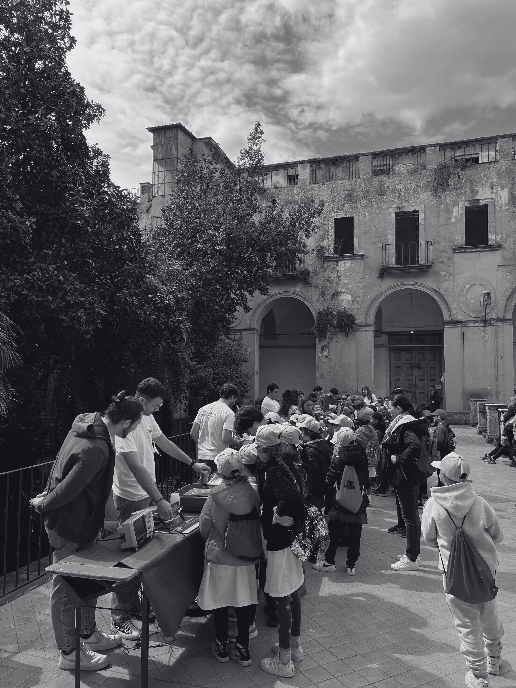
Sharing the hidden stories of the universe with the general public during an outreach event.
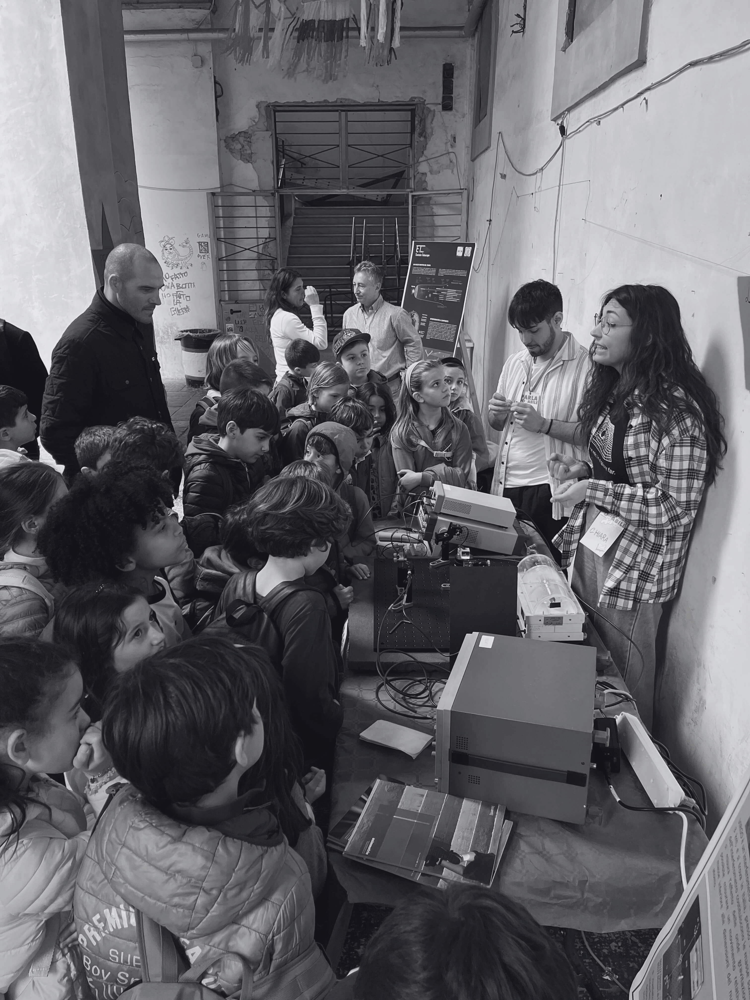
Physics is best learned by doing. A session showing how particles interact with the world around us.
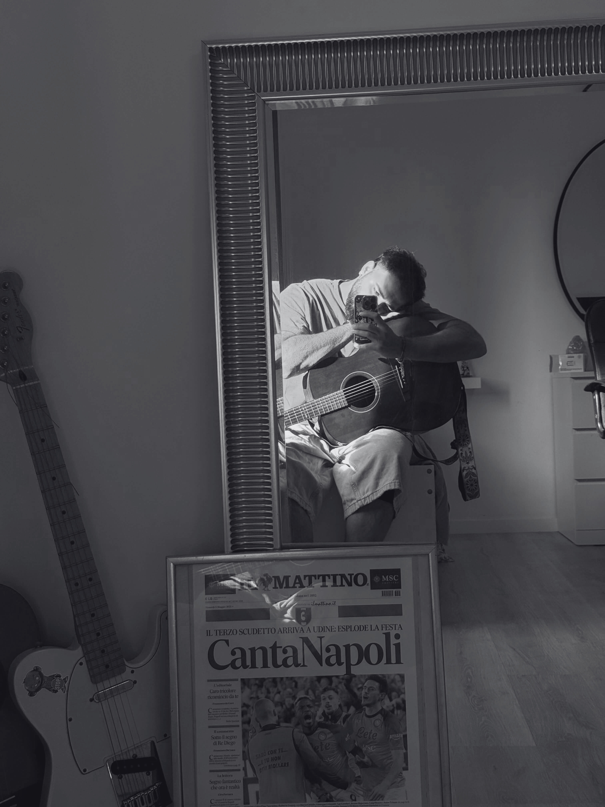
I really like Radiohead and other rock stuff. Favourite guitarist? John Frusciante for sure!
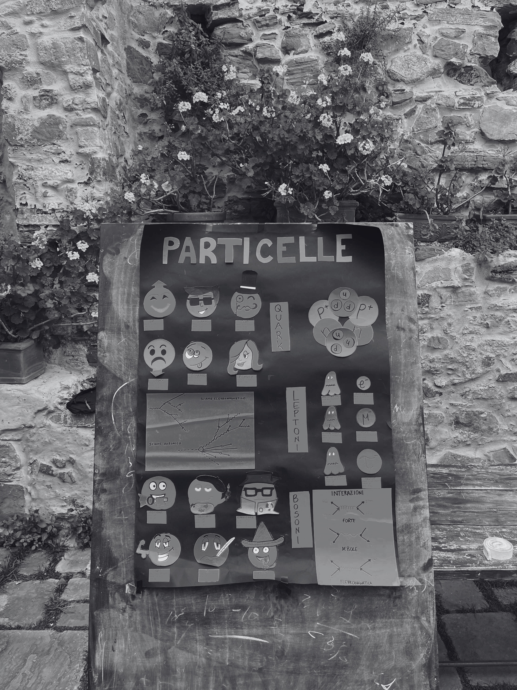
Sharing the Standard Model's fundamentals with some kids on Procida Island in Naples was one of my favourite outreach experiences.
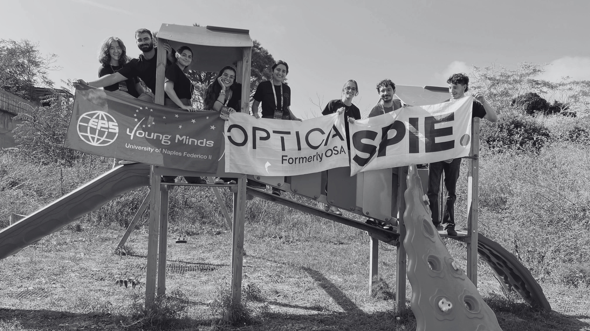
With Ponys APS, I've collaborated with many international organizations like EPS, SPIE, and OSA.
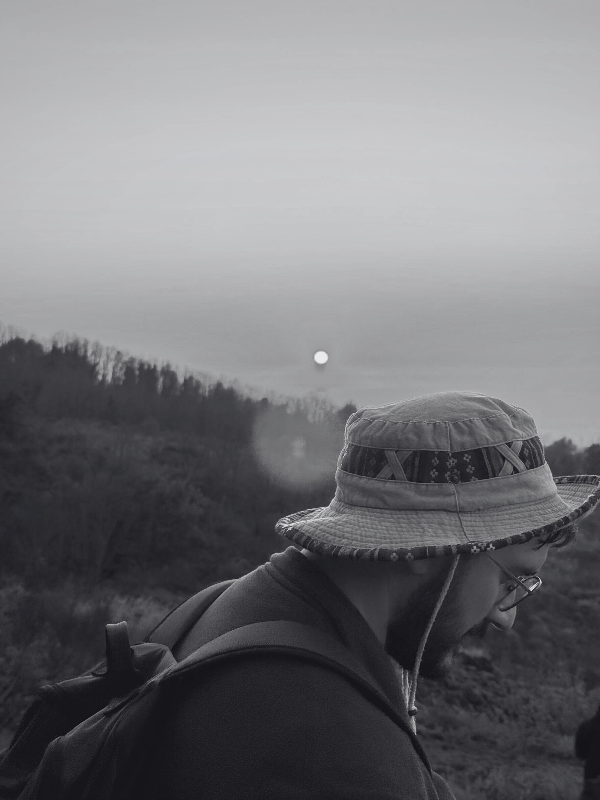
Reconnecting with nature through mountain exploration.
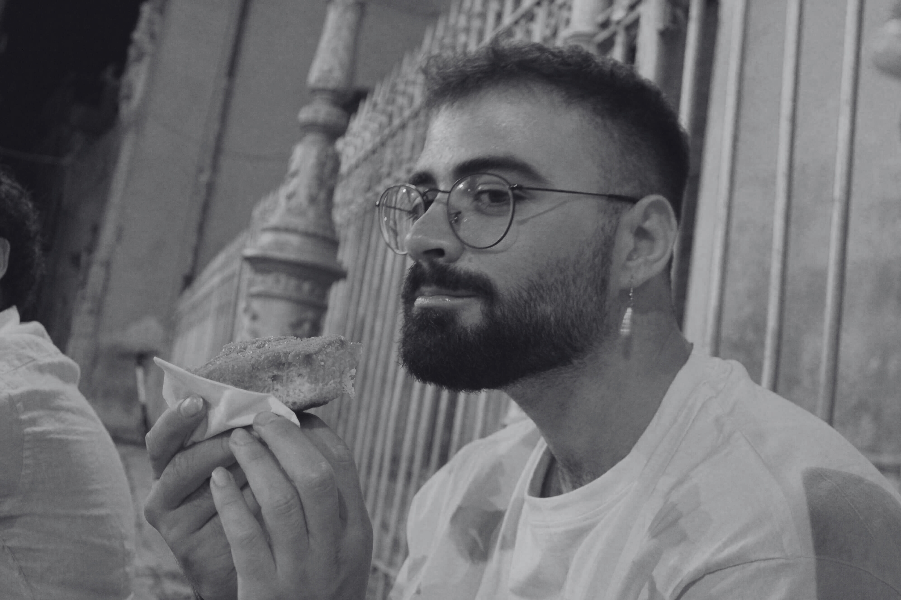
I really, really, really—I mean, really—like food. Really.